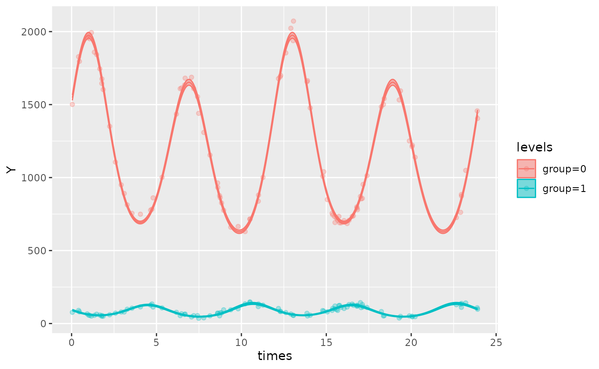

An brief introduction to the cosinor model
A cosinor model aims to model the amplitude (\(A\)), acrophase (\(\phi\)), and MESOR (\(M\)) of a rhythmic dataset.
MESOR (\(M\)) is the Midline Estimating Statistic of Rhythm, and may also be referred to as the equilibrium point.
Amplitude (\(A\)) is the difference between the MESOR and the maximum height of the rhythm.
Acrophase (\(\phi\)) is the phase at which the maximal response occurs.
These could be modelled using a cosine function:
\[Y(t) = M + Acos(\frac{2\pi t}{\tau} - \phi) + e(t)\] where \(e(t)\) is the error term.
However, these cannot be estimated using a linear modelling
framework! Other packages, including {circacompare}
(Parsons et al. 2020), fit this exact
nonlinear model but most packages (including this one) decomposes this
into linear terms, creating the cosinor model:
\[Y(t) = M + \beta x + \gamma z + e(t)\]
Where \(x =cos(\frac{2\pi t}{τ})\), \(z =sin(\frac{2\pi t}{τ})\), \(\beta = A cos(\phi)\), \(\gamma = A sin(\phi)\)
These original parameters can be recovered: for amplitude (\(A\)) and acrophase (\(\phi\)), the estimates for \(\hat\beta\) and \(\hat\gamma\) must be transformed as per the following equations:
\[\hat\phi = \arctan(\frac{\hat\gamma}{\hat\beta}) \]
\[\hat A = \sqrt{\hat\beta ^2 + \hat\gamma ^ 2}\] For a more thorough introduction to cosinor modelling, see here (Cornelissen 2014).
Introduction
GLMMcosinor allows the user to fit generalised linear
models based on rhythmic data with a cosinor model. It allows users to
summarise, predict, and plot these models too. Existing packages have
focused primarily on Gaussian data. Some circadian regression modelling
packages have allowed users to specify generalised linear models, but
with limited flexibility. GLMMcosinor takes a
comprehensive approach to modelling by harnessing the
glmmTMB package, that has a wide range of available link
functions, allowing users to model rhythmic data from a wide range of
distributions (for full list - see ?family and
?glmmTMB::family_glmmTMB) including:
- Binomial
- Guassian
- Inverse Gaussian
- Gamma
- Poisson
- Negative Binomial
The table below shows what features are available within GLMMcosinor and other methods.
Software |
Language |
Multicomponent |
Dispersion model |
Zero-inflated model |
Differential rhythmicity |
Parameter estimates for differences |
Family (available link functions) |
Estimated parameters |
Reference |
|---|---|---|---|---|---|---|---|---|---|
GLMMcosinor |
R |
✓ |
✓ |
✓ |
✗ |
✓ |
n > 15 Any family avilable in {glmmTMB}: Gaussian, gamma, binomial, Poisson, … |
Amplitude, acrophase, MESOR |
Parsons, 2023 |
CircaCompare |
R |
✗ |
✗ |
✗ |
✗ |
✓ |
n = 1 Gaussian |
Amplitude, acrophase, MESOR, and exponential decay of any of these characteristics or the differences in them between groups |
Parsons, 2020 |
Cosinor |
R |
✗ |
✗ |
✗ |
✓ |
✓ |
n = 1 Gaussian |
Amplitude, acrophase, MESOR |
Sachs, 2014 |
Cosinor2 |
R |
✗ |
✗ |
✗ |
✓ |
✓ |
n = 1 Gaussian |
Amplitude, acrophase, MESOR |
Mutak, 2018 |
CosinorPy |
Python |
✓ |
✗ |
✗ |
✓ |
✓ |
n = 3 Gaussian, Poisson, negative-binomial |
Amplitude, acrophase, MESOR |
Moskon, 2020 |
DiscoRhythm |
R |
✗ |
✗ |
✗ |
✗ |
✗ |
n = 1 Gaussian |
Amplitude, acrophase |
Carlucci, 2019 |
FMM |
R |
✓ |
✗ |
✗ |
✗ |
✓ |
n = 1 Gaussian |
Amplitude, FMM phase angle parameters: alpha, beta, gamma |
Fernández, 2022 |
Kronos |
R |
✓ |
✗ |
✗ |
✓ |
✓ |
n = 1 Gaussian |
Amplitude, acrophase, MESOR |
Bastiaanssen, 2023 |
LimoRhyde |
R |
✗ |
✗ |
✗ |
✓ |
✓ |
n = 1 Gaussian |
Amplitude, acrophase, MESOR, period |
Singer, 2019 |
RhythmCount |
Python |
✓ |
✗ |
✓ |
✗ |
✓ |
n = 6 Poisson, generalised-Poisson, zero-inflated Poisson, negative binomial, zero-inflated negative-binomial |
Amplitude, acrophase, MESOR, Zenith |
Velikajne, 2022 |
cglmm()
cglmm() wrangles the data appropriately to fit the
cosinor model given the formula specified by the user. It returns a
model, providing estimates of amplitude, acrophase, and MESOR (Midline
Statistic Of Rhythm).
The formula argument for cglmm() is specified using the
lme4 style (for details see
vignette("lmer", package = "lme4")). The only difference is
that it allows for use of amp_acro() within the formula
that is used to identify the cosinor (rhythmic) components and relevant
variables in the provided data. Any other combination of covariates can
also be included in the formula as well as random effects. Additionally,
zero-inflation (ziformula) and dispersion
(dispformula) formulae can be incorporated if required. For
detailed examples of how to specify these types of models, see the mixed-models,
model-specification
and multiple-components
vignettes.
For example, consider the following model and its output:
library(GLMMcosinor)
cosinor_model <- cglmm(
vit_d ~ X + amp_acro(time, period = 12, group = "X"),
data = vitamind
)Notice how both the raw and transformed coefficients are provided as
output. The adapted data.frame that was used to fit the raw
model can be accessed from the model and includes main_rrr1
and main_sss1 columns of data:
head(cosinor_model$newdata)
#> vit_d time X main_rrr1 main_sss1
#> 1 16.12091 11.439525 0 0.9572476 -0.2892699
#> 2 29.90624 5.807104 0 -0.9949038 0.1008285
#> 3 39.17572 1.045492 1 0.8538711 0.5204846
#> 4 35.15403 4.082983 1 -0.5371451 0.8434899
#> 5 43.67065 10.606247 1 0.7453295 -0.6666963
#> 6 31.20360 5.126054 0 -0.8971168 0.4417935In this example, the main prefix indicates that this is
the data for the conditional model, as opposed to (potential) dispersion
or zero-inflation models, which have the prefixes disp and
zi, respectively. The numeric suffix, indicates that this
is the data for the first (and only) cosinor component. If there are
multiple components, the columns of data will be named accordingly.
A basic overview of cglmm()
The cglmm() function is used to fit cosinor models to a
variety of distributions using the glmmTMB() function.
cglmm(
formula = vit_d ~ amp_acro(time, period = 12),
data = vitamind,
family = gaussian
)
#>
#> Conditional Model
#>
#> Raw formula:
#> vit_d ~ main_rrr1 + main_sss1
#>
#> Raw Coefficients:
#> Estimate
#> (Intercept) 30.25467
#> main_rrr1 2.59418
#> main_sss1 5.75079
#>
#> Transformed Coefficients:
#> Estimate
#> (Intercept) 30.25467
#> amp 6.30883
#> acr 1.14703-
formula: A formula specifying the model structure, including the response variable and the cosinor components (usingamp_acro()). -
data: Thedata.framecontaining the variables used in the formula. -
family: The family of the distribution for the response variable (e.g., poisson, gaussian, or any family found in?familyand?glmmTMB::family_glmmTMB)
The amp_acro() function is used within the formula to
specify the cosinor components. It allows you to specify the period of
the rhythm and, if necessary, the grouping structure and the number of
components. The arguments of amp_acro() are:
-
group: The name of the grouping variable in the dataset. -
time_col: The name of the time column. -
n_components: The number of components in the cosinor model. -
period: The period(s) of the rhythm.
Understanding the output
The most relevant output from the cglmm() function is
likely to be the parameter estimates for MESOR, amplitude, and acrophase
under the ‘Transformed Coefficients’ heading. These are the recovered
estimates mentioned at the beginning of this vignette: the amplitude and
phase. The ‘Raw Coefficients’ are the coefficients from the cosinor
model. In this example, the main_rrr1 and
main_sss1 correspond to \(\hat\beta\) and \(\hat\gamma\) in the first section,
respectively.
The following example fits a grouped single-component model with a Guassian distribution (the default).
cglmm(
vit_d ~ X + amp_acro(time, period = 12, group = "X"),
data = vitamind
)
#>
#> Conditional Model
#>
#> Raw formula:
#> vit_d ~ X + X:main_rrr1 + X:main_sss1
#>
#> Raw Coefficients:
#> Estimate
#> (Intercept) 29.68980
#> X1 1.90186
#> X0:main_rrr1 0.93079
#> X1:main_rrr1 6.51029
#> X0:main_sss1 6.20099
#> X1:main_sss1 4.81846
#>
#> Transformed Coefficients:
#> Estimate
#> (Intercept) 29.68980
#> [X=1] 1.90186
#> [X=0]:amp 6.27046
#> [X=1]:amp 8.09947
#> [X=0]:acr 1.42181
#> [X=1]:acr 0.63715Under the ‘Transformed Coefficients’ heading:
(Intercept) = 29.6898is the MESOR estimate of group 0[X=1] = 1.90186is the difference between the MESOR estimates of group 1 and 2 *[X=0]:amp = 6.27046is the amplitude estimate for group 0[X=1]:amp = 8.09947is the amplitude estimate for group 1[X=0]:acr = 1.42181is the acrophase estimate in radians for group 0 **[X=1]:acr = 0.63715is the acrophase estimate in radians for group 1
* Hence, the MESOR estimate for group 1 would be
29.6898 + 1.90186 = 31.59166. This is due to the behaviour
of the glmmTMB() function. This can be adjusted by adding a
0 + to the beginning of the formula:
cglmm(
vit_d ~ 0 + X + amp_acro(time,
period = 12,
group = "X"
),
data = vitamind
)
#>
#> Conditional Model
#>
#> Raw formula:
#> vit_d ~ X + X:main_rrr1 + X:main_sss1 - 1
#>
#> Raw Coefficients:
#> Estimate
#> X0 29.68980
#> X1 31.59165
#> X0:main_rrr1 0.93079
#> X1:main_rrr1 6.51029
#> X0:main_sss1 6.20101
#> X1:main_sss1 4.81847
#>
#> Transformed Coefficients:
#> Estimate
#> [X=0] 29.68980
#> [X=1] 31.59165
#> [X=0]:amp 6.27048
#> [X=1]:amp 8.09948
#> [X=0]:acr 1.42181
#> [X=1]:acr 0.63716Note how now, [X=1] = 31.59165 and this represents the
estimate for the MESOR for group 1, rather than the difference.
** Note how the acrophase is provided in units of radians. Since the
period is 12, an acrophase of 1.42181 radians corresponds to a time of
\(\frac{1.42181}{2 \pi} \times 12 =
2.715457\). This means the maximum response occurs at 2.715 time
units. We can check this visually using the autoplot()
function, looking at the [X=0] level (red line)
cosinor_model <- cglmm(
vit_d ~ 0 + X + amp_acro(time,
period = 12,
group = "X"
),
data = vitamind
)
autoplot(cosinor_model, predict.ribbon = FALSE)
More advanced cglmm() model specification
The cglmm() function allows you to specify different
types of cosinor models with or without grouping variables. The function
can also generate dispersion models and zero-inflation models. For more
detailed explanations and examples, see the model-specification
article.
Additionally, the cglmm() function provides more
advanced functionality for multi-component models, and detailed
explanations can be found in the multiple-components
article.
The cglmm() function also allows mixed model
specification. See the mixed-models
article for more details.
Using summary() and testing for differences between
estimates
The summary() method for the outputs from
cglmm() provides a more detailed summary of the model and
its parameter estimates and uncertainty. It outputs the estimates,
standard errors, confidence intervals, and p-values for both the raw
model parameters and the transformed parameters. The summary statistics
do not represent a comparison between any groups for the cosinor
components - that is the role of the
test_cosinor_components() and
test_cosinor_levels() functions.
Here is an example of how to use summary() with some
simulated data:
testdata_simple <- simulate_cosinor(
1000,
n_period = 2,
mesor = 5,
amp = 2,
acro = 1,
beta.mesor = 4,
beta.amp = 1,
beta.acro = 0.5,
family = "poisson",
period = 12,
n_components = 1,
beta.group = TRUE
)
object <- cglmm(
Y ~ group + amp_acro(times, period = 12, group = "group"),
data = testdata_simple, family = poisson()
)
summary(object)
#>
#> Conditional Model
#> Raw model coefficients:
#> estimate standard.error lower.CI upper.CI p.value
#> (Intercept) 4.998454142 0.003463730 4.991665356 5.00524 < 2.22e-16
#> group1 -1.002150001 0.005937109 -1.013786521 -0.99051 < 2.22e-16
#> group0:main_rrr1 1.082281784 0.003347565 1.075720677 1.08884 < 2.22e-16
#> group1:main_rrr1 0.876651963 0.006198710 0.864502714 0.88880 < 2.22e-16
#> group0:main_sss1 1.682350718 0.003919418 1.674668800 1.69003 < 2.22e-16
#> group1:main_sss1 0.481951763 0.005936670 0.470316104 0.49359 < 2.22e-16
#>
#> (Intercept) ***
#> group1 ***
#> group0:main_rrr1 ***
#> group1:main_rrr1 ***
#> group0:main_sss1 ***
#> group1:main_sss1 ***
#> ---
#> Signif. codes: 0 '***' 0.001 '**' 0.01 '*' 0.05 '.' 0.1 ' ' 1
#>
#> Transformed coefficients:
#> estimate standard.error lower.CI upper.CI p.value
#> (Intercept) 4.998454142 0.003463730 4.991665356 5.00524 < 2.22e-16 ***
#> [group=1] -1.002150001 0.005937109 -1.013786521 -0.99051 < 2.22e-16 ***
#> [group=0]:amp1 2.000409408 0.004275553 1.992029478 2.00879 < 2.22e-16 ***
#> [group=1]:amp1 1.000398004 0.007530397 0.985638697 1.01516 < 2.22e-16 ***
#> [group=0]:acr1 0.999134804 0.002034131 0.995147980 1.00312 < 2.22e-16 ***
#> [group=1]:acr1 0.502662067 0.007562019 0.487840782 0.51748 < 2.22e-16 ***
#> ---
#> Signif. codes: 0 '***' 0.001 '**' 0.01 '*' 0.05 '.' 0.1 ' ' 1If we wanted to test the difference between the amplitude estimate
for component 1 between group 1 and group 2,
we can use the test_cosinor_levels() function:
test_cosinor_levels(object, x_str = "group", param = "amp")
#> Test Details:
#> Parameter being tested:
#> Amplitude
#>
#> Comparison type:
#> levels
#>
#> Grouping variable used for comparison between groups: group
#> Reference group: 0
#> Comparator group: 1
#>
#> cglmm model only has a single component and to compare
#> between groups.
#>
#>
#>
#> Global test:
#> Statistic:
#> 23339.2
#>
#> P-value:
#> 0
#>
#>
#> Individual tests:
#> Statistic:
#> -152.77
#>
#> P-value:
#> 0
#>
#> Estimate and 95% confidence interval:
#> -1 (-1.01 to -0.99)The estimate here is the estimate of the difference between the
inputted values, along with its confidence interval. The real parameters
for amp in the first component were 2 and 1 for groups 0
and 1 respectively, and so the difference is approximately -1.
Now, consider an example where the difference is not so clear.
testdata_poisson <- simulate_cosinor(100,
n_period = 2,
mesor = 7,
amp = c(0.1, 0.5),
acro = c(1, 1),
beta.mesor = 4.4,
beta.amp = c(0.1, 0.46),
beta.acro = c(0.5, -1.5),
family = "poisson",
period = c(12, 6),
n_components = 2,
beta.group = TRUE
)
cosinor_model <- cglmm(
Y ~ group + amp_acro(times,
period = c(12, 6),
n_components = 2,
group = "group"
),
data = testdata_poisson,
family = poisson()
)
test_cosinor_levels(
cosinor_model,
x_str = "group",
param = "amp",
component_index = 1
)
#> Test Details:
#> Parameter being tested:
#> Amplitude
#>
#> Comparison type:
#> levels
#>
#> Grouping variable used for comparison between groups: group
#> Reference group: 0
#> Comparator group: 1
#>
#> cglmm model has2 components. Component 1 is being used for comparison between groups.
#>
#>
#>
#> Global test:
#> Statistic:
#> 0.05
#>
#> P-value:
#> 0.8223
#>
#>
#> Individual tests:
#> Statistic:
#> -0.22
#>
#> P-value:
#> 0.8223
#>
#> Estimate and 95% confidence interval:
#> 0 (-0.04 to 0.03)In this example, there is no significant difference in the estimate
of amp for the first component between the reference group
and the comparator group. Also notice how if we are comparing between
levels, we should keep the component the same, and that is what
component_index sets. Likewise, when we test between
components using test_cosinor_components(), we can indicate
which level this comparison occurs using level_index. There
may be multiple groups, in which case we can fix the
group using the x_str argument.
As an example of testing the difference between components for the same level:
test_cosinor_components(
cosinor_model,
x_str = "group",
param = "acr",
level_index = 1
)
#> Test Details:
#> Parameter being tested:
#> Acrophase
#>
#> Comparison type:
#> components
#>
#> Component indices used for comparison between groups: group
#> Reference component: 1
#> Comparator component: 2
#>
#>
#> Global test:
#> Statistic:
#> 95.32
#>
#> P-value:
#> 0
#>
#>
#> Individual tests:
#> Statistic:
#> -9.76
#>
#> P-value:
#> 0
#>
#> Estimate and 95% confidence interval:
#> -1.89 (-2.27 to -1.51)In this situation, there is a significant difference between the acrophase for the comparator group between its two components.
Using predict()
The predict() method allows users to get predicted
values from the model on either the existing or new data.
#> predictions Y times group
#> 1 865.8332 871 17.009450 0
#> 2 701.2750 714 10.503837 0
#> 3 798.4445 861 4.800118 0
#> 4 1551.0482 1541 18.409584 0
#> 5 1733.9702 1699 12.315885 0
#> 6 1972.1517 1951 1.072893 0Plotting cglmm objects
The GLMMcosinor package includes two ways to visualise
cglmm() objects. Firstly, the autoplot()
method creates a time-response plot of the fitted model for all
groups:
autoplot(cosinor_model, superimpose.data = TRUE)
This function also allows users to superimpose the data (that was
used to fit the model) over the fitted model, using the
superimpose.data = TRUE, as demonstrated above. By default,
the generated plot will have x-limits corresponding to the minimum and
maximum values of the time-vector in the original dataframe, although
the x-limits can be manually defined by the user using the
xlims argument. The details of using the
autoplot function are found in the model-visualisations
vignette.